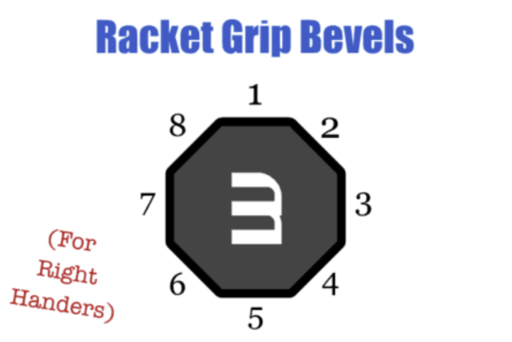
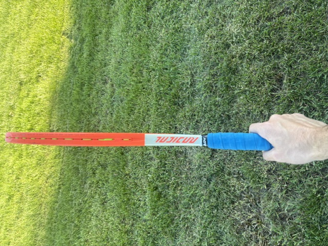

You have now learned how to do a topspin serve! There is a little bit more to learn, but you now have all the basics on how to hit a topspin ball off the serve. There are 2 other common types of serves. They are a slice serve and a flat serve.

This shows the racket drop

This is the position you should be in when making contact with the ball
Remember to not open the face of the racket. This is reffered to as waiters position and it is when your racket goes flat like a trey that waiters use. To avoid this, you should make sure that your knuckles are always facing the sky so the racket won't go flat.
A common mistake is not making the swing all one motion. It is important to make sure that you never pause the motion even when dropping the racket. If you pause, you will lose a lot of power in your serve.